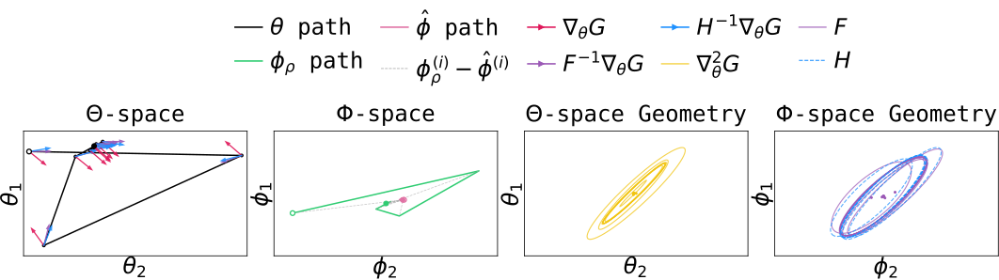

An illustration of the geometry of the IRL problem in the two-state MDP, showing the Lagrangian dual $\mathcal{G}(\theta)$ in reward parameter space, the vanilla gradient, the ideal one-step optimisation direction, and our integral FIM-preconditioned gradient (function-space update) $\delta^{(i)}$. The vanilla gradient is normal to the contour of $\mathcal{G}(\theta)$ and potentially leads to poor reward updates. In contrast, the function-space update considers the geometry along the e-geodesic in occupancy space, leading to geometry-aware reward updates.
TL;DR IRL can be decoupled into a policy-side and a reward-side optimization problem, where the policy objective is to minimize the KL divergence to the expert and the reward objective is to minimize the IRL problem's Lagrangian dual $\mathcal{G}(\theta)$. The reward problem is classically solved with gradient descent, which is slow. We instead show that it can be easily solved with natural gradient descent. Our key insight is that the natural gradient of the Lagrangian dual is easily computable just as a convex interpolation of the previous reward and an empirical estimate of the optimal reward (i.e. no need to estimate, compute, or invert any FIM). We show that this update is equivalent to mirror descent (MD), and policy search over this reward is approximate entropic MD with bounded errors in the trust-region setting.
Abstract
Inverse Reinforcement Learning (IRL) is classically solved using Lagrangian optimisation, by jointly optimising a primal-dual problem with gradient descent to obtain the optimal reward function parameters and corresponding optimal policy. While this algorithmic view of IRL has been highly influential, gradient-based reward updates only paint a partial picture, largely ignoring the geometry of the problem in occupancy space. In this paper, we present an occupancy-space view of reward updates in IRL. We leverage the insight that both the optimal solution and its geometry in occupancy space are known, and show that the geometry along the e-geodesic (straight line in occupancy space) toward the optimal occupancy directly affects the gradient of the IRL dual problem in reward parameter space. This perspective naturally suggests preconditioning the dual gradient with the average Fisher information along the occupancy trajectory. We show that this preconditioned gradient is just a convex interpolation of the old reward and a new target reward, yielding efficient natural-gradient-style updates with little additional computational overhead. We then analyse these occupancy-space reward updates from a Mirror Descent (MD) perspective, and show that policy search over the resulting rewards induces approximate entropic MD on the policy. Finally, we conclude with convergence results of such geometry-aware IRL algorithms.
Key Results


The vanilla gradient $\nabla_{\theta}\mathcal{G}$, the natural gradient $( F(\phi) )^{-1} \nabla_{\theta} \mathcal{G}$, and our integral FIM-preconditioned gradient $\delta^{(i)} = \beta ( H^{(i)} )^{-1} \nabla_{\theta} \mathcal{G}$ in a gridworld IRL task. The functional update is geometry-aware and often aligns with the natural gradient, while being much cheaper to compute.
We are interested in the specific problem setting of entropy-regularized reverse-KL divergence minimisation between the expert's and agent's occupancy measures. In this setting, we start with the following observation:
The optimal solution to the IRL problem admits an explicit characterization in the space of occupancy measures. An approximation of this optimal occupancy ($\rho_{\hat{\pi}}$) is known based on the current reward function. Reward updates in IRL can be seen as facilitating $\rho_\pi \rightarrow \rho_{\hat{\pi}}$.
Target Occupancy
Given the optimal reward function $r^{\star} = \beta \log \left( \nicefrac{\rho_{E}(\mathbf{s},\mathbf{a})}{\rho_{\pi^\star}(\mathbf{s},\mathbf{a})} \right)$ and the current reward iterate $r^{(i)}$, an approximation of the optimal occupancy can be derived as:
\begin{align}
\rho_{\hat{\pi}}(\mathbf{s}, \mathbf{a}) \propto \exp{\left( \log \rho_{E}(\mathbf{s},\mathbf{a}) - \frac{1}{\beta} r^{(i)} \right)} &= \exp{\left( \left(\phi_{E} - \frac{\theta^{(i)}}{\beta}\right)^\intercal \psi(\mathbf{s}, \mathbf{a}) \right)} = \exp{\left(\hat{\phi}^\intercal \psi(\mathbf{s}, \mathbf{a}) \right)} \nonumber \\
&\textit{where,} \quad \hat{\phi} = \left(\phi_{E} - \frac{\theta^{(i)}}{\beta}\right) \tag{3}
\end{align}
Here, $\hat{\phi}$ is the natural parameter of $\rho_{\hat{\pi}}$ and the optimisation target in $\Phi$ space. This directly implies that the reward function is linear in features as $r^{(i)} = \theta^{(i) \intercal} \psi(\mathbf{s}, \mathbf{a})$.
Below, we show that moving towards this target in occupancy space is the same as taking a natural-gradient-style step on the Lagrangian dual $\mathcal{G}(\theta)$. We show that this natural gradient is cheap to compute as it is just an interpolation of the old reward and a new estimate of the optimal reward, with no Fisher information matrix to compute or invert.
Lemma 3.8 (Informal)
Let $F(\phi) = \underset{\rho_{\phi}}{\text{Cov}}[\psi(\mathbf{s}, \mathbf{a})]$ be the Fisher Information Matrix of $\rho_{\phi}$. For $\tau \in [0,1]$, let $\phi^{(i)}(\tau) \triangleq \hat{\phi} + \tau (\phi_{\rho^{(i)}} - \hat{\phi})$ be the optimisation trajectory in $\Phi$-space (straight line between $\phi_{\rho^{(i)}}$ and $\hat{\phi}$), and $H^{(i)} \triangleq \int_0^1 F(\phi^{(i)}(\tau)) d\tau$ be an integral of the FIM over $\phi^{(i)} (\tau)$. Then,
\begin{align}
\beta \left( \phi_{\rho^{(i)}} - \hat{\phi} \right) &= \beta \left( H^{(i)} \right)^{-1} \nabla_{\theta} \mathcal{G} && \eqnote{(natural gradient)} \tag{4} \\
&= \theta^{(i)} - \beta \log \left(\nicefrac{\rho_E}{\rho_{\pi^{(i)}}}\right) && \eqnote{(interpolation of empirical estimates)}
\end{align}
Next, we show why this simple update works so well. It is mirror descent on the dual $\mathcal{G}(\theta)$, so each step stays close to the previous reward, with closeness measured by the geometry of occupancy space instead of plain Euclidean distance.
Theorem 3.9 (Reward-MD, Informal)
Let $\delta^{(i)} = \theta^{(i)} - \beta \log \left(\nicefrac{\rho_E}{\rho_{\pi^{(i)}}}\right)$ be the scaled $\Phi$-space update direction. The reward update $\theta^{(i+1)} = \theta^{(i)} - \epsilon \delta^{(i)}$ is equivalent to mirror descent with a time-varying, squared Mahalanobis proximal term
\begin{align}
\theta^{(i+1)} = \theta^{(i)} - \epsilon \delta^{(i)} &= \underset{\theta}{\arg \min} \left[ \left< \nabla_{\theta} \mathcal{G}(\theta^{(i)}), \theta \right> + \underbrace{\frac{1}{2 \epsilon \beta} \left\lVert \theta - \theta^{(i)} \right\rVert_{H^{(i)}}^2}_{\text{prox. term}} \right]
\end{align}
Finally, we show that optimising the policy on these rewards is also (approximately) entropic mirror descent on the IRL objective $\mathcal{J}$. We bound the error to be the KL divergence between policy iterates, which is naturally small for trust-region policy optimization methods (e.g. Trust Region IRL).
Theorem 4.7 (Policy-MD, Informal)
A mirror descent update on the IRL objective $\mathcal{J}(\rho_{\pi}(\mathbf{s},\mathbf{a}))$ under entropy regularization is equivalent to the following max-ent policy update
\begin{align}
\rho_{\pi^{(i+1)}}(\mathbf{s},\mathbf{a}) &= \underset{\rho_{\pi}(\mathbf{s},\mathbf{a})}{\arg\max} \; \left[ \; \Big< \nabla_{\rho_{\pi}(\mathbf{s},\mathbf{a})} \mathcal{J}(\rho_{\pi^{(i)}}(\mathbf{s},\mathbf{a})), \rho_{\pi}(\mathbf{s},\mathbf{a}) \Big> - \frac{1}{\epsilon} \text{KL} \left( \rho_{\pi}(\mathbf{s},\mathbf{a}) \left\lvert \right\rvert \rho_{\pi^{(i)}}(\mathbf{s},\mathbf{a}) \right) \;\right] \\
&\equiv \underset{\pi(\mathbf{a}|\mathbf{s})}{\arg \max} \; \mathbb{E}_{\rho_{\pi}(\mathbf{s})} \left[ H(\pi(\mathbf{a}|\mathbf{s})) + \mathbb{E}_\pi \left[ r^{(i)}(\mathbf{s},\mathbf{a}) - \epsilon \delta^{(i)} \right] \right] - \mathcal{K}
\end{align}
where the error $\mathcal{K}$ is bounded by the reverse KL divergence to the previous policy iterate (typically already enforced in trust-region methods).
Citation
@inproceedings{diwan2026geometric,
title = {A Geometric Perspective on Reward Function Updates in Inverse Reinforcement Learning},
author = {Diwan, Anish and Peters, Jan and Arenz, Oleg},
booktitle = {Advances in Neural Information Processing Systems (NeurIPS)},
year = {2026}
}